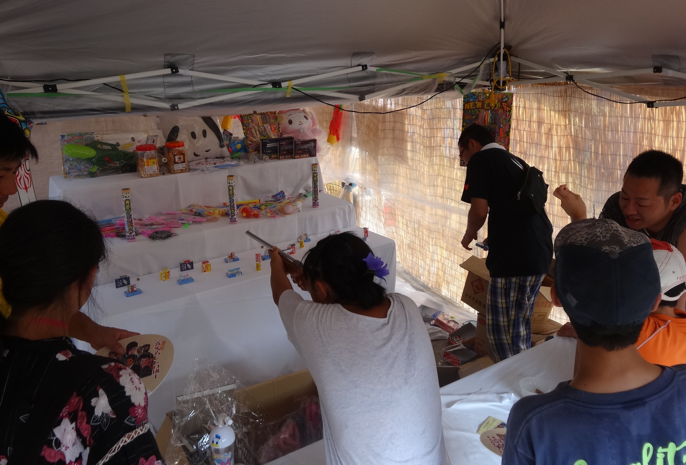
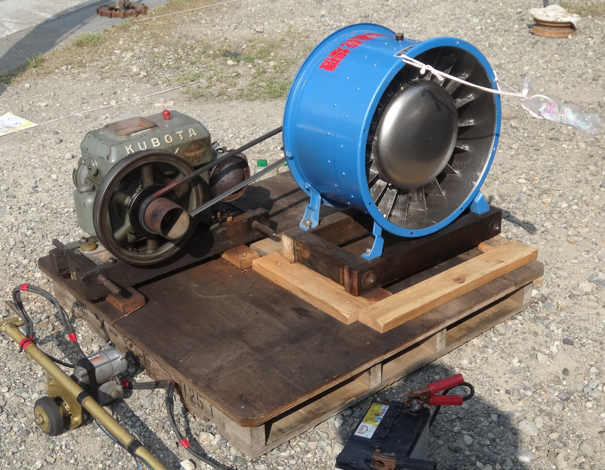
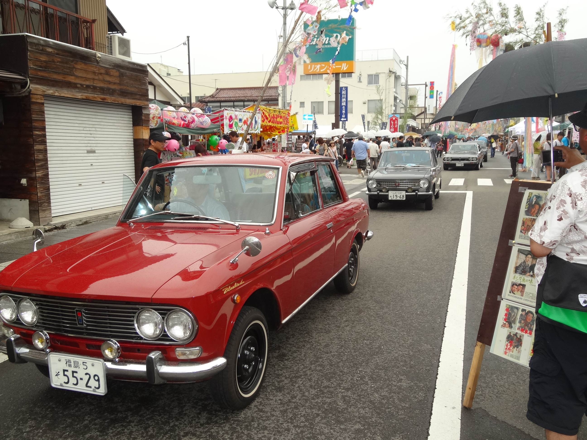
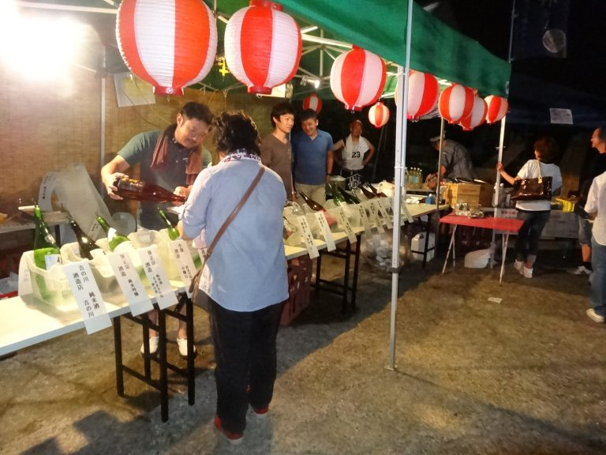

喜多方レトロ横丁について
喜多方レトロ横丁って？？
福島県喜多方市にあるふれあい通り商店街で毎年7月に開催されている、昭和レトロがテーマのイベントです。
市民手作りの色鮮やかな七夕飾りが来場者を出迎え、各テーマ別ミュージアムやレトロモーターショー、昔懐かしい遊びや縁日、お化け屋敷や屋台など”昭和”を体感できる50以上ものメニューが開催されます。そこでは昭和時代を知る世代から知らない世代まで、幅広い年代で楽しむことができます。
昭和の雰囲気が残る町並みを歩きませんか？
喜多方レトロ横丁では、DC期間特別企画として「レトロなガイドツアー」を開催しています。蔵のまちガイドが、イベントの喧騒からはずれた懐かしい昭和の面影が残る路地裏へご案内いたします。ガイドはレトロなスタイル（ゆかた、甚平、もんぺ姿など）でご案内します。お客様もご要望があれば「ゆかたで歩きましょう」で着付け（500円オプション）が可能です。せっかくの機会ですので参加してみてはいかがでしょうか？
料金 : お一人様 1,000円～2,000円
所要時間 : 約１時間～２時間
レトロ横丁には”昭和”ならではのものがたくさん！
当日に行われるイベントやブースについて、少しだけ紹介します！
ここで紹介するのはほんの一部なので、他のイベントやブースは会場に行ってからのお楽しみです！
大人も子供も楽しめる縁日！
一番人気は射的！他にヨーヨー
すくいやピンボールがあります！
今では使われなくなった発動機！
この発動機からは一定のリズム音、
独特なオイルの香りがします！
レトロモーターShow！
昭和を走り抜け、皆が憧れた
あの往年の名車が会場に集結！
喜多方SAKE万国博覧会！
ここでは喜多方の各酒蔵が醸す
極上の日本酒を堪能できます！
動画を公開しています！！
喜多方レトロ横丁は令和元年に15周年を迎え、その記念動画として作られました！
レトロ横丁本番の数ヶ月前から当日本番の様子まで、人々の熱い思いが込められた動画となっています！
まだレトロ横丁を体験していない方は、是非動画も見ていただいて、
今後は実際足を運んでいただき、
毎年行ってます！という方も違う角度でレトロ横丁を感じていただければ幸いです。
喜多方レトロ横丁15周年記念動画〜レトロ横丁ができるまで〜
⇨ https://www.youtube.com/watch?v=gIWoLLii6ik&t=2s
第17回喜多方レトロ横丁新聞が完成しました!
今年の新聞が完成しましたので、ここに掲載いたします。
今年も内容盛りだくさんです！皆様のご来場お待ちしております。
インスタグラム、ツイッターを開設しました！！
インスタグラムとツイッターを開設いたしましたので、こちらのリンクからご覧ください。
最新情報についても更新していきますので、ご確認の程宜しくお願い致します！
インスタグラム ⇨ url
ツイッター ⇨ url